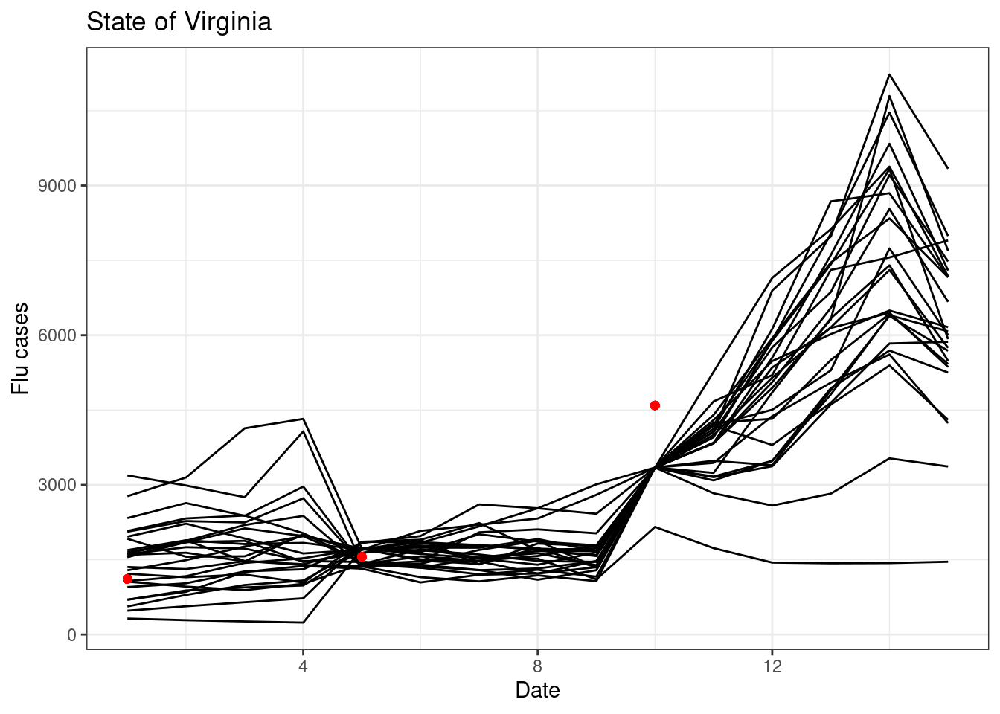

── Attaching core tidyverse packages ──────────────────────── tidyverse 2.0.0 ──
✔ dplyr 1.1.4 ✔ readr 2.1.4
✔ forcats 1.0.0 ✔ stringr 1.5.1
✔ ggplot2 3.4.4 ✔ tibble 3.2.1
✔ lubridate 1.9.3 ✔ tidyr 1.3.0
✔ purrr 1.0.2
── Conflicts ────────────────────────────────────────── tidyverse_conflicts() ──
✖ dplyr::filter() masks stats::filter()
✖ dplyr::lag() masks stats::lag()
ℹ Use the conflicted package (<http://conflicted.r-lib.org/>) to force all conflicts to become errors
set.seed(100)
17.1 Review of Batch vs Sequential Methods
Before beginning the introduction of the particle filter it is important to revisit the MCMC-MH approach that we used to estimate the parameters of a Bayesian model. Here is the general algorithm again:
for(i in 1:num_iterations){
Choose new parameters based on previous parameters
for(t in 1:length_of_time_series){
Make predictions over full time series
}
Calculate likelihood of data given model and current parameters
Calculate probability of priors given current parameters
Accept or reject parameters
}
Above you see that the outermost for-loop is looping over the number of iterations (num_iterations). The inner loop is looping over the length of the time series (length_of_time_series). Therefore this approach tests each parameter value choose in an iteration (and latent state if using a state space model) over ALL time points in the time series. As a result, we all this a batch method because it considers all data as a single “batch” of data.
Strengths of the batch method are:
- The parameters are consistent with all data - Straightforward to estimate parameters, uncertainty parameters, and latent states
Weaknesses:
- Can be computationally slow
- Require re-fitting model if there is even a single new data point
Alternatively, sequential methods only analyze data one time point as a time. Here is general code for a sequential method - notice that the for-loop order is reversed
Calculate prior distribution of parameters
for(t in 1:length_of_time_series){
for(i in 1:num_of_particles){
Make predictions for each particle based on previous value for particle
}
Compare particle to data (likelihood or other technique)
Weight particles based on the comparsion to the data
Adjust particles based on weights
}
In the sequential method we can restart at any time point, as long as we have the values for the states and parameters that are associated with each particle. When doing an iterative forecast, these values are what you would save to wait for new data to arrive.
17.2 Introduction to Particle Filter
There are many sequential data assimilation methods that make different assumptions about data and model distributions in order to simplify the analysis. Many of the methods emerged before the our massive computational resources or were developed for HUGE problems like assimilating terabytes of data into a global weather model that simulates the physics of the atmosphere at 25 km vertical resolution. Examples include the Kalman Filter, Extending Kalman Filter, Ensemble Kalman Filter, and 4D-var. These methods all heavily use matrix algebra which I have not introduced in this class. Since these methods commonly assume that the data and model errors are normally distributed, the numerical version (Ensemble Kalman Filter) can run fewer particles (in this case: ensemble members) because it doesn’t take as many samples to estimate the mean and variance of a distribution than it does to estimate the full distribution
Here I introduce the Particle Filter. The particle filter is a sequential method that is familiar to folks that have learned the Bayesian methods that we have covered in the class. It has the concept of a likelihood, of which you are well versed. The particle filter does not assume a specific distribution of the data and model error so it requires more particles to estimate the full distributions. As a result, it is more appropriate for “smaller” problems like the ones we are tackling in this class.
The particle filter is quite simple
Initialize a set of particles: Set the initial distribution of the states for each particle and, if estimating parameters, initial distribution of parameters that you want to estimate. Think of this as your initial priors.
Predict the next time step using your process model for each particle. Add process uncertainty to each particle (i.e., rnorm)
If there are observations at the time-step, calculate the likelihood of the data given the particle just like we calculated the likelihood in the likelihood and Bayesian exercises. For example: LL <- dnorm(obs, mean = pred, sd_obs). You will typically use the uncertainty of the observations in the likelihood because you have already included the process uncertainty in #2. If observations are not available at the time step, then continue to the time step.
If there are observations at the time-step, resample the particles using the likelihood as the weights (don’t forget to exponentiate the likelihood if you logged it in #3, the weights must be probabilities rather than log probabilities). The weighted sampling, with replacement, will randomly pick the more likely particles more often. You will keep the same number of particles but the values for each particle will change. Less likely particles will be replaced with more likely particles (though the less likelihood particles can still be selected). Be sure to resample all states together and, if also estimating parameters, the parameters as well. The key to resampling is the following:
## calculate likelihood (weight) for one state with an observation at that time-step
## The dimensiosn of x
wt <- dnorm(y[t], mean = x[t, ], sd = sd_data)
# Normalize the weights
wt_norm <- wt / sum(wt)
## resample ensemble members in proportion to their weight.
## Since the total number of samples = the number of particles then you will preserve the
## Same number of particles
resample_index <- sample(1:num_particles, num_particles, replace = TRUE, prob = wt_norm)
##Use the index to resample
x[t, ] <- x[t, resample_index]
Continue to next time step.
Fundamentally, the particle filter depends on two concepts that you have already been exposed to: likelihood and sampling from a set of particles (you sampled iterations from MCMC in previous exercises).
Specifically we refer to the particle filter described above as a bootstrap particle filter
17.3 Example of Particle Filter
Here is an example of the particle filter applied to the google flu data
First load in data. We are only going to focus on the first 15 weeks of the data so that you can see the particles more easily
gflu <-read_csv("data/gflu_data.txt", skip =11, show_col_types =FALSE) %>%select(Date, Virginia) |>mutate(Date =as.Date(Date))gflu <- gflu[1:15, ]ggplot(data = gflu, aes(x = Date, y =log(Virginia))) +geom_line() +geom_point() +labs(x ="Date", y ="Log(flu cases)", title ="Virginia Google Flu Trends")
17.3.1 PF with no-observations
First we are going to run the particle filter with all data missing. This is equal to the random walk.
The sd_add would have been determined from a state-space Bayesian MCMC chain that used previously available data.
The sd_obs is the observation uncertainty.
The sd_init sets the initial uncertainty in the model states (you could use the distribution of the last latent state from a state-space Bayesian MCMC chain)
The key decision is the num_particles. More is always better but it comes at a computational and computer memory cost.
num_particles <-25y <-log(gflu$Virginia)nt <-length(y)#This sets all the observations to NA after the firsty[2:nt] <-NAsd_init <-0.5sd_add <-0.2sd_obs <-0.2x <-array(NA, dim =c(nt, num_particles))x[1, ] <-rnorm(num_particles, mean = y[1], sd = sd_obs)### resampling bootstrap particle filterfor(t in2:nt){## forward stepfor(m in1:num_particles){ x[t, m ] <- x[t -1, m ] +rnorm(1, mean =0, sd = sd_add) }## analysis stepif(!is.na(y[t])){ ## calculate Likelihood (weights) wt <-dnorm(y[t], mean = x[t, ], sd = sd_obs) ## calculate likelihood (weight) wt_norm <- wt /sum(wt)## resample ensemble members in proportion to their weight resample_index <-sample(1:num_particles, num_particles, replace =TRUE, prob = wt_norm) x[t, ] <- x[t, resample_index] ## update state }}
Now plot the particles individually
tibble(time =1:nt,as_tibble(x)) %>%pivot_longer(cols =-time, names_to ="ensemble", values_to ="x") %>%mutate(x =exp(x)) %>%ggplot(aes(x = time, y = x, group =factor(ensemble))) +geom_line() +labs(x ="Date", y ="Flu cases", title ="State of Virginia")
Warning: The `x` argument of `as_tibble.matrix()` must have unique column names if
`.name_repair` is omitted as of tibble 2.0.0.
ℹ Using compatibility `.name_repair`.
Lets save the output as a different name so we can compare to a PF with observations
x_no_obs <- x
17.3.2 PF with observations
Now we can examine how the PF uses observations to update the model and modify the trajectory. The following is the same as above except that there are data at week 1, 5, and 10.
num_particles <-25y <-log(gflu$Virginia)nt <-length(y)#This sets all the observations to NA after the firsty[2:nt] <-NAy[c(5, 10)] <-log(gflu$Virginia)[c(5, 10)]sd_init <-0.5sd_add <-0.2sd_obs <-0.2x <-array(NA, dim =c(nt, num_particles))x[1, ] <-rnorm(num_particles, mean = y[1], sd = sd_init)### resampling bootstrap particle filterfor(t in2:nt){## forward stepfor(m in1:num_particles){ x[t, m ] <- x[t -1, m ] +rnorm(1, 0, sd_add) }## analysis stepif(!is.na(y[t])){## calculate Likelihood (weights) wt <-dnorm(y[t], mean = x[t, ], sd = sd_obs) ## calculate likelihood (weight) wt_norm <- wt /sum(wt)## resample ensemble members in proportion to their weight resample_index <-sample(1:num_particles, num_particles, replace =TRUE, prob = wt_norm) x[t, ] <- x[t, resample_index] ## update state }}
Now plot the particles with the observations. You can see how the particles are adjusted when data are present.
tibble(time =1:nt,as_tibble(x),obs = y) %>%pivot_longer(cols =-c("time","obs"), names_to ="ensemble", values_to ="x") %>%mutate(x =exp(x),obs =exp(obs)) %>%ggplot(aes(x = time, y = x, group =factor(ensemble))) +geom_line() +geom_point(aes(y = obs), color ="red") +labs(x ="Date", y ="Flu cases", title ="State of Virginia")
The estimate of parameters using PF is also straightforward. Here we will estimate the b1 parameter in the Dynamic Linear Model from the state-space exercise. The DLM uses minimum temperature as a covariant
First, create the observed data that includes the minimum temperature. (same as above and using the daymetr package from the previous exercise)
Now modify the PF with the DLM model instead of the random walk. This should be familiar to you.
The values for b0, b2, and sd_add are the mean values from the MCMC chain in the previous assignment.
We are estimating b1 (the sensitivity to minimum temperature). Just like we need to initialize the states at the first time step, we will initialize the distribution of the b1 at the first time step using a normal distribution with a mean = b1_mean and sd = b1_sd. This were the mean an sd of b1 from the MCMC chain in the previous assignment.
y <-log(gflu$Virginia)num_particles <-25nt <-length(y)y[2:nt] <-NAy[c(5, 10)] <-log(gflu$Virginia)[c(5, 10)]sd_init <-0.5sd_add <-0.130144sd_obs <-0.2b0 <-0.482462b2 <--0.063887b1_mean <--0.002479b1_sd <-0.01x <-array(NA, dim =c(nt, num_particles))x[1, ] <-rnorm(num_particles, y[1], sd = sd_init)b1 <-array(NA, dim =c(nt, num_particles))b1[1, ] <-rnorm(num_particles, mean = b1_mean, sd = b1_sd)Tmin <- gflu$Tmin
Now run the PF with the DLM model. You need to also carry through the values for b1.
Importantly, the distribution of b1 carries through from the previous time-step. When there is an observation, b1 is resampled using the same index that the states are resampled. This ensures that the parameters match the states from the same particle.
for(t in2:nt){## forward stepfor(m in1:num_particles){ pred <- x[t-1, m] + b0 + b1[t-1, m] * Tmin[t] + b2*x[t-1, m] x[t, m ] <- pred +rnorm(1, mean =0, sd = sd_add) b1[t, m] <- b1[t-1, m] }## analysis stepif(!is.na(y[t])){## calculate Likelihood (weights) wt <-dnorm(y[t], mean = x[t, ], sd = sd_obs) ## calculate likelihood (weight) wt_norm <- wt /sum(wt)## resample ensemble members in proportion to their weight resample_index <-sample(1:num_particles, num_particles, replace =TRUE, prob = wt_norm) x[t, ] <- x[t, resample_index] ## update state b1[t, ] <- b1[t, resample_index] ## Parameter update }}
Now visualize the states from the PF
tibble(time =1:nt,obs = y,as_tibble(x)) %>%pivot_longer(cols =-c(time,obs), names_to ="ensemble", values_to ="x") %>%mutate(x =exp(x)) %>%ggplot() +geom_line(aes(x = time, y = x, group =factor(ensemble))) +geom_point(aes(x = time, y =exp(obs)), color ="red") +labs(x ="Date", y ="Flu cases", title ="State of Virginia")
And visualize the time-evolution of the parameter. There are two new concepts illustrated below:
parameters distributions evolve through time. As a result the distribution of parameters is strongly influenced by the most recent observations. The distributions produced by a PF are not the same as the distributions produced by MCMC chain.
particles can have degeneracy, whereby the values of the parameters collapse down to one or a few values. This occurs because the PF does not propose new parameter values, it only selects (through resampling) parameter values from the initial set that you started with. Over the time-step the PF weeds out bad parameters and only a few ones are left. This is a major issue with a PF. Degeneracy can also occur in the states but since we are adding process uncertainty (sd_add) the particles are able to separate through time. There are a couple of ways to solve degeneracy - increase the number of particles so you sample more initial parameter values or propose new parameter values as part of the PF (how do to this is beyond the scope of this lecture)
tibble(time =1:nt,as_tibble(b1)) %>%pivot_longer(cols =-c(time), names_to ="ensemble", values_to ="b1") %>%ggplot() +geom_line(aes(x = time, y = b1, group =factor(ensemble))) +labs(x ="Date", y ="B1", title ="State of Virginia")

17.3.4 Sensitivity to number of particles
The number of particles is a key decision when using a PF. To explore the sensitivity of the PF to the number of particles, here is a function that can be reused with different numbers of particles. It is the same as the DLM above and returns the x and b1 for the particles in a list
bootstrap_pf <-function(num_particles, sd_add =0.2, sd_obs =0.2){ y <-log(gflu$Virginia) nt <-length(y) y[2:nt] <-NA y[c(5, 10)] <-log(gflu$Virginia)[c(5, 10)] sd_init <-0.5 b0 <-0.482462 b2 <--0.063887 b1_mean <--0.002479 b1_sd <-0.01 sd_add <-0.130144 x <-array(NA, dim =c(nt, num_particles)) x[1, ] <-rnorm(num_particles, mean = y[1], sd = sd_init) b1 <-array(NA, dim =c(nt, num_particles)) b1[1, ] <-rnorm(num_particles, b1_mean, sd = b1_sd) Tmin <- gflu$Tmin### resampling bootstrap particle filterfor(t in2:nt){## forward stepfor(m in1:num_particles){ pred <- x[t-1, m] + b0 + b1[t-1, m] * Tmin[t] + b2*x[t-1, m] x[t, m ] <- pred +rnorm(1, mean =0, sd = sd_add) b1[t, m] <- b1[t-1, m] }## analysis stepif(!is.na(y[t])){## calulate Likelihood (weights) wt <-dnorm(y[t], mean = x[t, ], sd = sd_obs) ## calculate likelihood (weight) wt_norm <- wt /sum(wt)## resample ensemble members in proportion to their weight resample_index <-sample(1:num_particles, num_particles, replace =TRUE, prob = wt_norm) x[t, ] <- x[t, resample_index] ## update state b1[t, ] <- b1[t, resample_index] ## Parameter update } }return(list(x = x, b1 = b1))}
First, run the PF using 10, 100, 1000, and 10000 particles
And combine to a single plot. You see the width of the 95 % confidence interval increases substantially from 10 to 1000 particles but then is similar from 1000 to 10000. This reflects what we learned from the very first exercise where you drew random samples from a distribution and found that between 1000 and 10000 random samples were required to approximate the distribution well.
p10 <-tibble(time = gflu$Date,as_tibble(pf_10$x)) %>%pivot_longer(cols =-c("time"), names_to ="ensemble", values_to ="x") %>%mutate(type ="pf_10")p100 <-tibble(time = gflu$Date,as_tibble(pf_100$x)) %>%pivot_longer(cols =-c("time"), names_to ="ensemble", values_to ="x") %>%mutate(type ="pf_100")p1000 <-tibble(time = gflu$Date,as_tibble(pf_1000$x)) %>%pivot_longer(cols =-c("time"), names_to ="ensemble", values_to ="x") %>%mutate(type ="pf_1000")p10000 <-tibble(time = gflu$Date,as_tibble(pf_10000$x)) %>%pivot_longer(cols =-c("time"), names_to ="ensemble", values_to ="x") %>%mutate(type ="pf_10000")gflu$obs_in_fit <-exp(y)bind_rows(p10, p100, p1000, p10000) %>%group_by(time, type) %>%mutate(x =exp(x)) %>%summarise(mean =mean(x),upper =quantile(x, 0.975),lower =quantile(x, 0.025),.groups ="drop") %>%ggplot(aes(x = time, y = mean)) +geom_line(aes(color = type)) +geom_ribbon(aes(ymin = lower, ymax = upper, color = type, fill = type), alpha =0.2) +geom_point(data = gflu, aes(x = Date, y = Virginia), color ="red") +geom_point(data = gflu, aes(x = Date, y = obs_in_fit), color ="black") +labs(x ="Date", y ="Flu cases", title ="Google Flu Trends for Virginia")
We can also explore the sensitivity of the PF updating to our observation uncertainty. Intuitively, we should have stronger update (i.e., the particles are adjusted to be closer to the observation) when there is less uncertainty in the observations. The code below explores whether this intuition is correct.
pf_low_obs <-bootstrap_pf(5000, sd_obs =0.1)pf_high_obs <-bootstrap_pf(5000, sd_obs =0.5)pf_low <-tibble(time = gflu$Date,as_tibble(pf_low_obs$x)) %>%pivot_longer(cols =-c("time"), names_to ="ensemble", values_to ="x") %>%mutate(type ="low obs uncertainity")pf_high <-tibble(time = gflu$Date,as_tibble(pf_high_obs$x)) %>%pivot_longer(cols =-c("time"), names_to ="ensemble", values_to ="x") %>%mutate(type ="high obs uncertainity")gflu$obs_in_fit <-exp(y)bind_rows(pf_low, pf_high) %>%group_by(time, type) %>%mutate(x =exp(x)) %>%summarise(mean =mean(x),upper =quantile(x, 0.975),lower =quantile(x, 0.025),.groups ="drop") %>%ggplot(aes(x = time, y = mean)) +geom_line(aes(color = type)) +geom_ribbon(aes(ymin = lower, ymax = upper, color = type, fill = type), alpha =0.2) +geom_point(data = gflu, aes(x = Date, y = Virginia), color ="red") +geom_point(data = gflu, aes(x = Date, y = obs_in_fit), color ="black") +labs(x ="Date", y ="Flu cases", title ="Google Flu Trends for Virginia")
The constant growth is the parameter g below (in units of gC/m2/yr) and mortality rate is the parameter ubelow (proportion of biomass per year). We fit the model as a state-space model.
17.4.2 Part 1: Fit model to historical data (Already done for you!)
This step is already done for you.
Here is the data for ages 1 through 50 for the plot (starting in 1950-01-01). It was measured every 5 years.
plot_data <-read_csv("data/PF_data1.csv", show_col_types =FALSE)ggplot(plot_data, aes(x = datetime, y = biomass)) +geom_point() +labs(x ="age", y ="aboveground biomass (gC/m2)")
Now you will use the MCMC chain to determine the mean parameter values and the initial condition at age 50 for the particle filter.
Using the lecture material create a particle filter that uses the forest growth model to simulate the aboveground biomass of the forest for age 50 through 70.
17.4.3.1 Step 1: Set up PF
Following the code in the PF lecture set up the particle filter.
Instead of using data from a file you will use the following for your data: obs <- NULL
Be sure to:
use the mean values for g, u, and sd_add from the MCMC chain as the parameter values
use the distribution of the biomass at age 50 in the MCMC chain as your initial state for the PF
The standard deviation for the obseravtions (sd_data) is 200.
#ADD CODE TO SET UP PF HERE
17.4.3.2 Step 2: Run particle filter
Write the code and run the particle filter based on the examples from the lecture. You will need to include the process model that is in the NIMBLE code above.
#ADD PF CODE HERE
17.4.3.3 Step 3: Visualize particle filter output
Generate a plot that visualizes the output of the PF (see examples from the lecture). Your plot must have age on the x-axis and biomass on the y-axis with different lines for the particles.
# ADD VISUALIZATION CODE HERE
17.4.3.4 Step 4: Save PF output
use this code to save your PF output as the object initial_forecast
17.4.4 Part 3:
Now we have new data!
new_data <-read_csv("data/PF_data2.csv", show_col_types =FALSE)ggplot(new_data, aes(x = datetime, y = biomass)) +geom_point() +labs(x ="age", y ="aboveground biomass (gC/m2)")
Using the new data, repeat the PF set up in Part 2 Step 1. You will be starting at age 50 just like above.
#ADD CODE TO SET UP PF HERE
17.4.4.2 Step 2: Run particle filter using the new data
Using the new data, run the the PF again. This will be the same code as in Part 2 Step 2 (just copy and paste)
#COPY AND PASTE PF CODE FROM ABOVE
17.4.4.3 Step 3: Visualize PF output
Generate a plot that visualizes the output of the PF (see examples from the lecture). Your plot must have age on the x-axis and biomass on the y-axis with different lines for the particles. Your observations from the new data must be on the plot.
#ADD VISUALIZATION CODE HERE
17.4.4.4 Step 4: Save output
17.4.5 Part 4:
Combine the two PF forecast and evaluate how data assimilation influence the forecast of the last 10 years (age 60 to 70). Produce a plot with the mean and 90% CI for the initial_forecast and assimilated_forecast on the same plot. Include the observations from the new data set.
#ADD CODE TO COMPARE THE TWO PF OUTPUTS
17.4.6 Part 5:
Answer the follow question
How did assimilating data influence your forecast for ages 60 to 70? Consider both the mean and uncertainty in your answer.